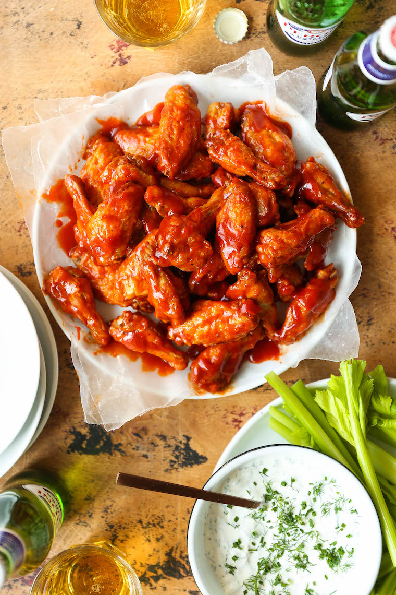

Odin Recipes
Buffalo Wings
The perfect buffalo wings for a game night or party!

Ingredients
- 3 pounds chicken wings
- Salt and black pepper
- Baking powder
- Tomato Sauce
- Hot sauce
- Worcestershire sauce
- Onion powder
- Garlic powder
- Ranch of your choice
Steps
- Preheat oven to 425 degrees Fahrenheit. Coat a wire rack with nonstick spray and place on a baking sheet lined with aluminum foil.
- Using paper towels, pat wings dry.
- In a large bowl combin wings, salt, pepper, and baking powder.
- Place wings into the baking sheet and bake for 40-45 minutes. Use tongs to flip wings at halftime.
- In a small saucepan over medium heat, combine tomato sauce, hot sauce, Worcestershire, onion and garlic powder.
- Bring sauce to a boil, reduce heat and simmer, stirring until lightly thickened.
- In a large bowl, combine wings and sauce.
- Bake wings again, turning at halftime. 5 minutes on each side.
- Top off with extra sauce if desired. Serve with ranch.